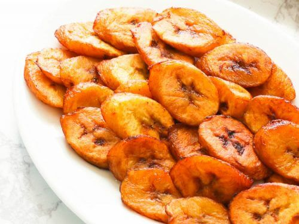

Plantain

Description
Plantains are closely related to bananas but they are more starchy, hence,
they are not eaten raw. They are either Green (Unripe) or ripe.
You can eat them fried, roasted, boiled, mashed, and or baked goods like this bread.
They have a flavor profile that can add richness to sweet dishes and heartiness to
savory ones.
Ingredients
- 3 ripe plantains
- Salt to taste
- 2 cups of oil
Steps
- Cut the ends of the plantains off and off the skin.
- Slice on the bias into about 1/4 to 1/2 inch thickness.
- Heat the Oil in a medium pan over medium to high heat.
- Carefully add the plantain inside the oil in a single layer.
- Fry the both side for about 3 to 4 minutes each.
- Remove the plantains from the oil and transfer them to a colander and serve.